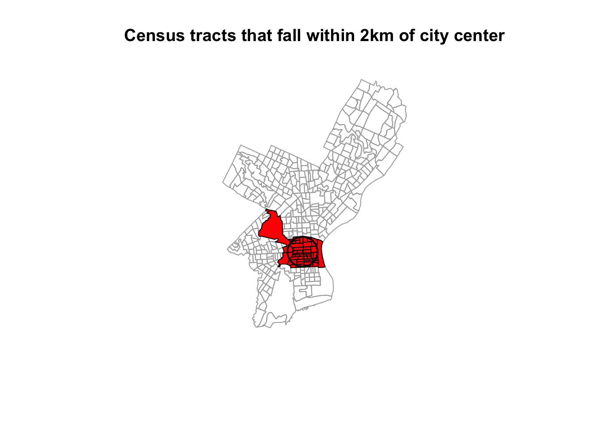

Chapter 2 Spatial data manipulation in R
Learning Objectives
- Join attribute data to a polygon vector file
- Reproject a vector file
- Select polygons of a vector by location
There are a wide variety of spatial, topological, and attribute data operations you can perform with R. Lovelace et al’s recent publication7 goes into great depth about this and is highly recommended.
In this section we will look at just a few examples for libraries and commands that allow us to process spatial data in R and perform a few commonly used operations.
2.1 Attribute Join
An attribute join on vector data brings tabular data into a geographic context. It refers to the process of joining data in tabular format to data in a format that holds the geometries (polygon, line, or point)8.
If you have done attribute joins of shapefiles in GIS software like ArcGIS or QGis you know that you need a unique identifier in both the attribute table of the shapefile and the table to be joined.
First we will load the CSV table PhiladelphiaEduAttain.csv into a dataframe in R and name it ph_edu.
ph_edu <- read.csv("data/PhiladelphiaEduAttain.csv")
names(ph_edu)2.1.1 How to do this in sf
If you don’t have the object still loaded read the the PhillyTotalPopHHinc shapefile into an object named philly_sf. Check out the column names of philly_sf and of ph_edu to determine which one might contain the unique identifier for the join.
## sf ##
# if you need to read in again:
# philly_sf <- st_read("data/Philly/")
names(philly_sf)To join the ph_edu data frame with philly_sf we can use merge like this:
philly_sf_merged <- merge(philly_sf, ph_edu, by.x = "GEOID10", by.y = "GEOID")
names(philly_sf_merged) #> [1] "GEOID10" "STATEFP10" "COUNTYFP10"
#> [4] "TRACTCE10" "NAME10" "NAMELSAD10"
#> [7] "MTFCC10" "FUNCSTAT10" "ALAND10"
#> [10] "AWATER10" "INTPTLAT10" "INTPTLON10"
#> [13] "GISJOIN" "Shape_area" "Shape_len"
#> [16] "medHHinc" "totalPop" "NAME"
#> [19] "fem_bachelor" "fem_doctorate" "fem_highschool"
#> [22] "fem_noschool" "fem_ovr_25" "male_bachelor"
#> [25] "male_doctorate" "male_highschool" "male_noschool"
#> [28] "male_ovr_25" "pop_ovr_25" "geometry"We see the new attribute columns added, as well as the geometry column.
2.1.2 The same with sp
In sp we have a Spatial*Dataframe that contains the geometries and an identifying index variable for each. We combine it with a dataframe, that includes the same index variable with additional variables.
The sp package has a merge command which extends the base merge command to work with Spatial* objects as argument9.
## sp ##
# if you need to read in again:
# philly_sp <- readOGR("data/Philly/", "PhillyTotalPopHHinc")
# this is sp::merge()
philly_sp_merged <- merge(philly_sp, ph_edu, by.x = "GEOID10", by.y = "GEOID")
names(philly_sp_merged) # no geometry column here(You may come across alternative suggestions for joins that operate on the data slot @data of the Spatial* object. While they may work, we don’t suggest them here, as good practice suggests not to use the slot explicitly if at all possible.)
2.2 Topological Subsetting: Select Polygons by Location
For the next example our goal is to select all Philadelphia census tracts within a range of 2 kilometers from the city center.
Think about this for a moment – what might be the steps you’d follow?
## How about:
# 1. Get the census tract polygons.
# 2. Find the Philadelphia city center coordinates.
# 3. Create a buffer around the city center point.
# 4. Select all census tract polygons that intersect with the center buffer2.2.1 Using the sf package
We will use philly_sf for the census tract polygons.
In addition, we need to create a sf Point object with the Philadelphia city center coordinates:
\[x = 1750160\] \[y = 467499.9\]
These coordinates are in the USA Contiguous Albers Equal Area Conic projected CRS and the EPSG code is 102003.
With this information, we create a object that holds the coordinates of the city center. Since we don’t have attributes we will just create it as a simple feature collection, scf.
# if you need to read in again:
# philly_sf <- st_read("data/Philly/", quiet = T)
# make a simple feature point with CRS
philly_ctr_sfc <- st_sfc(st_point(c(1750160, 467499.9)), crs = 102003)For the spatial operations we can recur to the suite of geometric operations that come with the sf package.
We create a 2km buffer around the city center point:
philly_buf_sf <- st_buffer(philly_ctr_sfc, 2000)Ok. Now we can use that buffer to select all census tract polygons that intersect with the center buffer. In order to determine the polygons we use st_intersects, a geometric binary which returns a vector of logical values, which we we can use for subsetting. Note the difference to st_intersection, which performs a geometric operation and creates a new sf object which cuts out the area of the buffer from the polygons a like cookie cutter.
Let us try this:
philly_buf_intersects <- st_intersects(philly_buf_sf, philly_sf)
#> Error in st_geos_binop("intersects", x, y, sparse = sparse, prepared = prepared) :
#> st_crs(x) == st_crs(y) is not TRUEOh, what happened? Are these projections not the same?
st_crs(philly_sf)#> Coordinate Reference System:
#> No EPSG code
#> proj4string: "+proj=aea +lat_1=29.5 +lat_2=45.5 +lat_0=37.5 +lon_0=-96 +x_0=0 +y_0=0 +ellps=GRS80 +units=m +no_defs"st_crs(philly_buf_sf)#> Coordinate Reference System:
#> EPSG: 102003
#> proj4string: "+proj=aea +lat_1=29.5 +lat_2=45.5 +lat_0=37.5 +lon_0=-96 +x_0=0 +y_0=0 +datum=NAD83 +units=m +no_defs"Ah. The difference seems to be that there is no EPSG code for philly_sf. Poking around the documentation we see that :
…
st_readtypically reads the coordinate reference system asproj4string, but not the EPSG (SRID). GDAL cannot retrieve SRID (EPSG code) from proj4string strings, and, when needed, it has to be set by the user…
Ok, so we need to fix this.
st_crs(philly_sf) <- 102003#> Warning: st_crs<- : replacing crs does not reproject data; use st_transform
#> for thatThis warning is ok, we know what we are doing. So now try again:
philly_buf_intersects <- st_intersects(philly_buf_sf, philly_sf)
class(philly_buf_intersects)#> [1] "sgbp"We have created a sgbp object, which is a “Sparse Geomtry Binary Predicate”. It is a so called sparse matrix, which is a list with integer vectors only holding the indices for each polygon that intersects. In our case we only have one vector, because we only intersect with one buffer polygon, so we can extract this first vector with philly_buf_intersects[[1]] and use it for subsetting:
philly_sel_sf <- philly_sf[philly_buf_intersects[[1]],]
# plot
plot(st_geometry(philly_sf), border="#aaaaaa", main="Census tracts that fall within 2km of city center")
plot(st_geometry(philly_sel_sf), add=T, col="red")
plot(st_geometry(philly_buf_sf), add=T, lwd = 2)
2.2.2 Using the sp package
In order to perform those operations on an sp object we will need to make use of an additional package, called rgeos. Make sure you have it loaded.
library(rgeos)
# if you need to read it in again
# philly_sp <- readOGR("data/Philly/", "PhillyTotalPopHHinc", verbose = F)We will use philly_sp for the census tract polygons.
Create a SpatialPoints object with the Philadelphia city center coordinates named philly_ctr_sp.
coords <- data.frame(x = 1750160, y = 467499.9) # set the coordinates
prj <- CRS("+proj=aea +lat_1=29.5 +lat_2=45.5 +lat_0=37.5 +lon_0=-96 +x_0=0 +y_0=0 +datum=NAD83 +units=m +no_defs") # the projection string for AEA
philly_ctr_sp <- SpatialPoints(coords, proj4string = prj) # create the spatialPointsNext, we create a buffer around the city center point.
Here is where we will use the gBuffer() function from the rgeos package. For this purpose we will need to provide two arguments: the sp object and the width of the buffer, which is assumed to be in map units. The function returns a SpatialPolygons object to you with the buffer.
philly_buf_sp <- gBuffer(philly_ctr_sp, width=2000) # create buffer around centerWe will use the gIntersects() function from the rgeos package to select all census tract polygons that intersect with the center buffer. The function tests if two geometries (let’s name them spgeom1 and spgeom2) have points in common or not. gIntersects returns TRUE if spgeom1 and spgeom2 have at least one point in common.
Here is where we determine if the census tracts fall within the buffer. In addition to our two sp objects (philly_buf and philly_sp) we need to provide one more argument, byid. It determines if the function should be applied across ids (TRUE) or the entire object (FALSE) for spgeom1 and spgeom2. The default setting is FALSE. Since we want to compare every single census tract polygon in our philly_sp object we need to set it to TRUE. Then we subset the object with the census tract polygons.
philly_buf_intersects <- gIntersects (philly_buf_sp, philly_sp, byid=TRUE)
# what kind of object is this?
class(philly_buf_intersects)
# subset
philly_sel_sp <- philly_sp[as.vector(philly_buf_intersects),]
# plot
plot (philly_sp, border="#aaaaaa")
plot (philly_sel_sp, add=T, col="red")
plot (philly_buf_sp, add=T, lwd = 2)2.3 Reprojecting
Occasionally you may have to change the coordinates of your spatial object into a new Coordinate Reference System (CRS). Functions to transform, or reproject spatial objects typically take the following two arguments:
- the spatial object to reproject
- a CRS object with the new projection definition
You can reproject
- a
sfobject withst_transform()
- a
Spatial*object withspTransform()
- a
rasterobject withprojectRaster()
The perhaps trickiest part here is to determine the definition of the projection, which needs to be a character string in proj4 format. You can look it up online. For example for UTM zone 33N (EPSG:32633) the string would be:
+proj=utm +zone=33 +ellps=WGS84 +datum=WGS84 +units=m +no_defs
You can retrieve the CRS:
- from an
sfobject withst_crs() - from an existing
Spatial*object withproj4string() - from a
rasterobject withcrs()
Let us go back to the "PhillyHomicides" shapefile we exported earlier. Let’s read it back in and reproject it so it matches the projection of the Philadelphia Census tracts.
Now let us check the CRS for both files.
#If you need to read the file back in:
#philly_homicides_sf <- st_read("data/PhillyHomicides/")
st_crs(philly_sf)#> Coordinate Reference System:
#> EPSG: 102003
#> proj4string: "+proj=aea +lat_1=29.5 +lat_2=45.5 +lat_0=37.5 +lon_0=-96 +x_0=0 +y_0=0 +datum=NAD83 +units=m +no_defs"st_crs(philly_homicides_sf)#> Coordinate Reference System:
#> EPSG: 4326
#> proj4string: "+proj=longlat +datum=WGS84 +no_defs"We see that the CRS are different: we have +proj=aea... and +proj=longlat.... AEA refers to USA Contiguous Albers Equal Area Conic which is a projected coordinate system with numeric units. We will need this below for our spatial operations, so we will make sure both files are in that same CRS.
We use st_transform and assign the result to a new object. Note how we also use str_crs to extract the projection defitition from philly_sf, so we don’t have to type it out.
philly_homicides_sf_aea <- st_transform(philly_homicides_sf, st_crs(philly_sf))We can use the range() command from the R base package to compare the coordinates before and after reprojection and confirm that we actually have transformed them. range() returns the min and max value of a vector of numbers.
range(st_coordinates(philly_homicides_sf))#> [1] -75.26809 40.13086range(st_coordinates(philly_homicides_sf_aea))#> [1] 457489.7 1763671.8We can also compare them visually with:
par(mfrow=c(1,2))
plot(st_geometry(philly_homicides_sf), axes=TRUE, main = "before transform - latlon")
plot(st_geometry(philly_homicides_sf_aea), axes=TRUE, main = "after transform - aea")
Lastly, let us save the reprojected file as PhillyHomicides_aea shapefile, as we will use it later on.
st_write(philly_homicides_sf_aea, "data/PhillyHomicides_aea", driver = "ESRI Shapefile")2.3.1 For sp
Below is the equivalent for sp objects. This is very similar, except that we wrap the CRS function ariound the result of proj4string, because spTransform requires a CRS object.
ph_homic_sp <- readOGR("data/PhillyHomicides/", "PhillyHomicides")
proj4string(philly_sp)
proj4string(philly_homicides_sp)
philly_homicides_sp_aea <- spTransform(philly_homicides_sp, CRS(proj4string(philly_sp)))
## check the coordinates ##
range(coordinates(ph_homic_aea_sp))
range(coordinates(ph_homic_sp))
## write out
writeOGR(philly_homicides_sp_aea, "data/PhillyHomicides_AEA", "PhillyHomcides_AEA", driver = "ESRI Shapefile")2.3.2 Raster reprojection
Here is what it would look like to reproject the HARV raster used earlier to a WGS84 projection. We see that the original projection is in UTM.
# if you need to load again:
#HARV <- raster("data/HARV_RGB_Ortho.tif")
crs(HARV)#> CRS arguments:
#> +proj=utm +zone=18 +datum=WGS84 +units=m +no_defs +ellps=WGS84
#> +towgs84=0,0,0HARV_WGS84 <- projectRaster(HARV, crs="+init=epsg:4326")Let’s look at the coordinates to see the effect:
extent(HARV)#> class : Extent
#> xmin : 731998.5
#> xmax : 732766.8
#> ymin : 4712956
#> ymax : 4713536extent(HARV_WGS84)#> class : Extent
#> xmin : -72.17505
#> xmax : -72.16544
#> ymin : 42.53393
#> ymax : 42.5394ncell(HARV)#> [1] 7120141ncell(HARV_WGS84)#> [1] 7687552And here is the visual proof:
plot(HARV, main = "before transform - UTM")
plot(HARV_WGS84, main = "after transform - WGS84")
2.4 Spatial Aggregation: Points in Polygons
Now that we have both homicides and census tracts in the same projection we will forge ahead and ask for the density of homicides for each census tract in Philadelphia: \(\frac{{homicides}}{area}\)
To achieve this this we join the points of homicide incidence to the census tract polygon and count them up for each polygon. You might be familiar with this operation from other GIS packages.
2.4.1 With sf
We will use piping and build up our object in the following way. First we calculate the area for each tract. We use the st_area function on the geometry column and add the result.
philly_sf %>%
mutate(tract_area = st_area(geometry)) %>%
head()Next, we use st_join to perform a spatial join with the points:
philly_sf %>%
mutate(tract_area = st_area(geometry)) %>%
st_join(philly_homicides_sf_aea) %>%
head()Now we can group by a variable that uiquely identifies the census tracts, (we choose GEOID10) and use summarize to count the points for each tract and calculate the homicide rate. Since our units are in sq meter. multiply by by 1000000 to get sq km. We also need to carry over the area, which I do using unique.
We also assign the output to a new object crime_rate.
crime_rate <- philly_sf %>%
mutate(tract_area = st_area(geometry)) %>%
st_join(philly_homicides_sf_aea) %>%
group_by(GEOID10) %>%
summarize(n_homic = n(),
tract_area = unique(tract_area),
homic_rate = n_homic/tract_area * 1e6) And here is a simple plot:
plot(crime_rate["homic_rate"])
Finally, we write this out for later:
st_write(crime_rate, "data/PhillyCrimerate", driver = "ESRI Shapefile")2.4.2 With sp
For sp objects we can use the aggregate() function10. Here are the arguments that it needs:
- the
SpatialPointDataframewith the homicide incidents as point locations, - the
SpatialPolygonDataframewith the census tract polygons to aggregate on, and - an aggregate function. Since we are interested in counting the points (i.e. the rows of all the points that belong to a certain polygon), we can use length (of the respective vectors of the aggregated data).
To count homicides per census tract we can use any field from ph_homic_aea for homicide incidents (we chose OBJ_ID) and philly polygons to aggregate on and save the result as ph_hom_count. Use length as aggregate function.
ph_hom_count_sp <- aggregate(x = ph_homic_aea_sp["OBJ_ID"], by = philly_sp, FUN = length)
# make sure we understand this error message:
# aggregate(x = ph_homic_sp, by = philly_sp, FUN = length) Now let us investigate the object we created.
class(ph_hom_count_sp)
names(ph_hom_count_sp)
head(ph_hom_count_sp)Now we can calculate the density of homicides in Philadelphia, normalized over the area for each census tract.
We use gArea() from the rgeos library. gArea, when given a SpatialPolygon, calculates the size of the area covered. If we need that calculation for each polygon, we set byid = TRUE. Units are in map units.
library(rgeos)
# we multiply by by 1000000 to get sq km.
ph_hom_count_sp$homic_dens <- 1e6 * (ph_hom_count_sp$OBJ_ID/gArea(ph_hom_count_sp, byid = FALSE))
hist(ph_hom_count_sp$homic_dens)We will write it out for later. (Note that this will produce an error if the file already exists. You can force it to write out with the option overwrite_layer = TRUE)
writeOGR(ph_hom_count_sp, "data/PhillyCrimerate", "PhillyCrimerate", driver = "ESRI Shapefile")There might be other instances where we don’t want to aggregate, but might only want to know which polygon a point falls into. In that case we can use over(). In fact, the aggregate() function used above makes use of over(). See https://cran.r-project.org/web/packages/sp/vignettes/over.pdf for more details on the over-methods. point.in.poly() from the spatialEco package intersects point and polygons and adds polygon attributes to points. There is also point.in.polygon() from the sp package which tests if a point or set of points fall in a given polygon.
2.4.3 sp - sf comparison
| how to.. | for sp objects |
for sf objects |
|---|---|---|
| join attributes | sp::merge() |
dplyr::*_join() (also sf::merge()) |
| reproject | spTransform() |
st_transform() |
| retrieve (or assign) CRS | proj4string() |
st_crs() |
| count points in polygons | over() |
st_within and aggregate() |
| buffer | rgeos::gBuffer() (separate package) |
st_buffer() |
| select by location | g* functions from rgeos |
st_* geos functions in sf |
Here are some additional packages that use vector data:
2.5 raster operations
to come
Some helpful packages that deal with raster data:
landscapetoolsprovides utility functions to complete tasks involved in common landscape analysis.getlandsat: Get Landsat 8 Data from Amazon Public Data SetsMODIStsp: automates the creation of time series of rasters derived from MODIS Land Products dataFedData: Download geospatial Data from federated data sources, including the The National Elevation Dataset digital elevation models, the Global Historical Climatology Network, the National Land Cover Database, and more.
Lovelace, R., Nowosad, J., & Muenchow, J. (2019). Geocomputation with R. CRC Press.↩
Per the ESRI specification a shapefile must have an attribute table, so when we read it into R with the
readOGRcommand from thesppackage it automatically becomes aSpatial*Dataframeand the attribute table becomes the dataframe.↩The
geo_join()command from thetigrispackage also provides a convenient way to merge a data frame to a spatial data frame.↩There is also an
aggregate()function in thestatspackage that comes with the R standard install. Note thatspextends this function so it can takeSpatial*objects and aggregate over the geometric features.↩